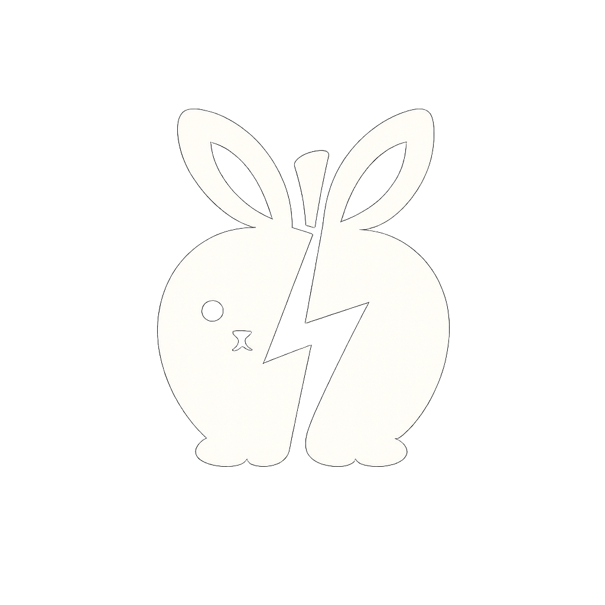

<div class="sidebar-header">
    
    <div class="logo-text">Grace Liu</div>
</div>
<nav>
    <p class="nav-label">MAIN MENU</p>
    <a href="index.html" class="nav-item" id="nav-dashboard">Dashboard</a>
    
    <p class="nav-label">CASE STUDIES</p>
    <a href="techtronics.html" class="nav-item" id="nav-techtronics">Techtronics</a>
    <a href="shellfund.html" class="nav-item" id="nav-shellfund">ShellFund</a>
    <a href="feastly.html" class="nav-item" id="nav-feastly">Feastly</a>
    <a href="research.html" class="nav-item" id="nav-research">AI Research Methods</a>
    <a href="simulator.html" class="nav-item" id="nav-simulator">3D Simulator</a>
</nav>
<div class="sidebar-footer">
    <button class="btn-outline">
        <svg width="20" height="20" viewBox="0 0 24 24" fill="none" stroke="currentColor" stroke-width="2" stroke-linecap="round" stroke-linejoin="round">
            <path d="M4 4h16c1.1 0 2 .9 2 2v12c0 1.1-.9 2-2 2H4c-1.1 0-2-.9-2-2V6c0-1.1.9-2 2-2z"></path>
            <polyline points="22,6 12,13 2,6"></polyline>
        </svg>
        Get in Touch
    </button>
</div>